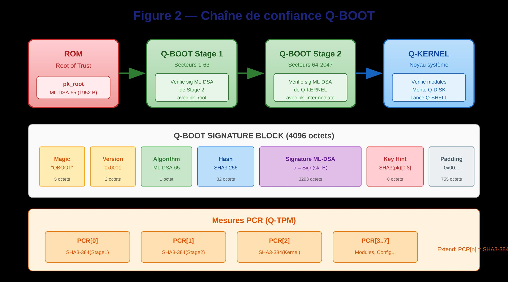
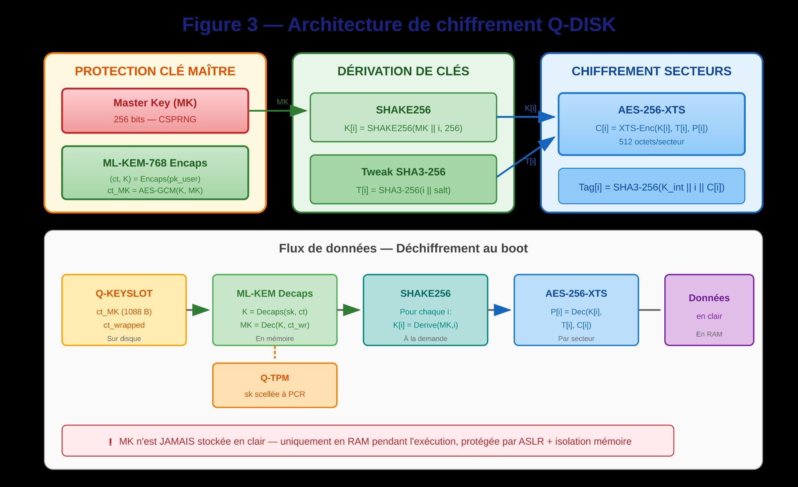
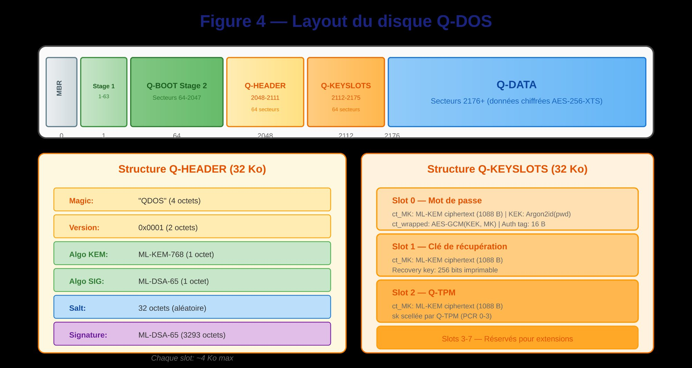
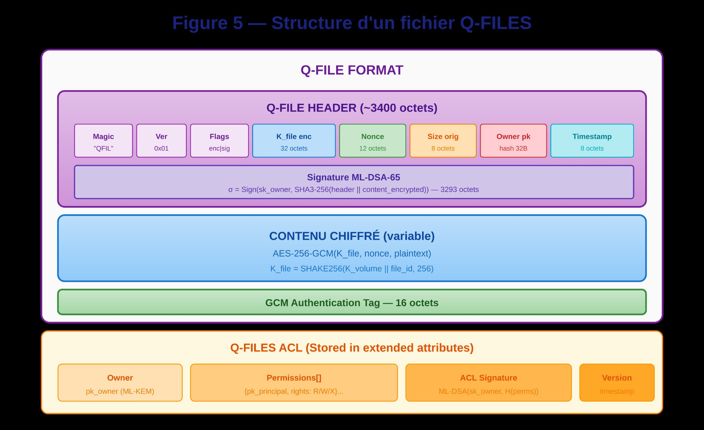
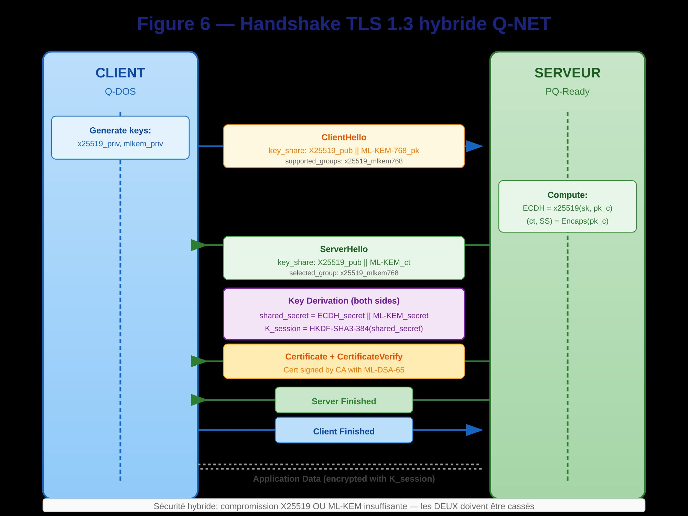
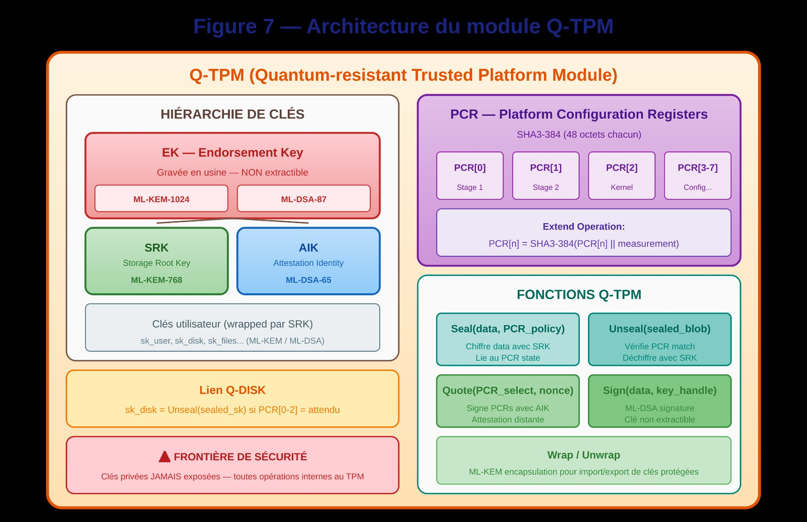

Q-DOS — L'OS post-quantique natif
Tout système d'exploitation actuel est vulnérable. Windows, Linux, macOS — leur boot chain repose sur RSA/ECDSA (cassable par Shor), leur chiffrement disque sur AES avec échange de clés classique, et leur horloge sur NTP (manipulable). Q-DOS remplace tout.
Architecture technique de Q-DOS
Brevet FR2600578 — Quantum Resistant Disk Operating System
Q-DOS n'est pas un patch post-quantique appliqué sur un noyau existant. C'est un système d'exploitation conçu de zéro pour l'ère quantique. Chaque couche — du boot au filesystem, de l'horloge à l'authentification — est nativement post-quantique.
Le Token TUTE contient un élément sécurisé (SE) de type JavaCard ou ARM TrustZone, qui stocke la paire de clés racine :
Encapsulation de clé post-quantique
Signature post-quantique NIST FIPS 204
Les clés ne quittent jamais le SE. Les opérations cryptographiques s'exécutent à l'intérieur du Token. L'hôte ne voit que les résultats (signatures, clés encapsulées). Même un dump mémoire complet de l'hôte ne révèle rien.
Horloge énergétique TUTE (τ = E/P) : le SE mesure sa propre consommation. Chaque opération crypto consomme de l'énergie mesurable → horodatage local irréfutable, sans NTP, sans GPS, sans tiers.
La boot chain classique (UEFI Secure Boot) utilise RSA-2048 ou ECDSA — cassables par Shor. Q-DOS remplace toute la chaîne :
Firmware → Bootloader → Noyau → Drivers → Userspace
Chaque étape signée ML-DSA. Vérifiée par le Token avant exécution.
Anti-rollback : compteur monotone τ dans le SE. Impossible de charger une version antérieure.
Attaque bootkit → impossible. Sans la clé ML-DSA privée (dans le Token), injecter un firmware modifié échoue à la vérification de signature. Le compteur τ empêche le downgrade.
Q-DOS n'utilise pas un filesystem classique (NTFS, ext4, APFS). Il n'y a pas de fichiers au sens traditionnel. Chaque « fichier » est :
2. Chaque fragment chiffré AES-256-GCM avec clé unique (dérivée HKDF-SHA3)
3. Clé d'encapsulation ML-KEM-1024 (post-quantique)
4. Marqué CAMÉLÉON (marqueur polymorphe HMAC-SHA3, 4 octets)
5. Dispersé sur N serveurs (1 fragment = 1 serveur = du bruit)
Le disque local ne contient rien. Tout est en RAM pendant l'utilisation, dispersé sur les relais le reste du temps. Chaque fragment passe les tests NIST SP 800-22 : indistinguable du bruit aléatoire.
Q-DOS remplace toute la pile TLS/PKI par une stack 100% post-quantique :
ECDSA P-256 (Shor → cassé)
ECDH (échange clés → cassé)
AES-128 (Grover → affaibli)
NTP (manipulable)
X.509 / PKI (CA = point de défaillance)
ML-DSA-87 (FIPS 204 — résiste Shor)
HKDF-SHA3-256 (dérivation)
AES-256-GCM (Grover → 128 bits effectifs)
τ = E/P (horloge physique, inmanipulable)
Token TUTE (zéro CA, zéro PKI)
Pas de certificat X.509. Pas d'autorité de certification. L'identité est le Token. La confiance est physique (énergie), pas institutionnelle (CA).
Tout OS classique dépend de NTP pour l'heure. NTP est manipulable (attaque Bittau, spoofing GPS). Q-DOS utilise CHRONOS — une horloge basée sur la thermodynamique :
Chaque opération crypto consomme de l'énergie → empreinte τ unique
L'énergie consommée ne revient pas → temps physiquement irréversible
Anti-rollback : τ est monotone croissant, ancré dans les lois de la thermodynamique
Anti-snapshot : l'état énergétique ne peut pas être copié ni gelé
Applications : horodatage irréfutable de documents, séquençage irréversible d'événements, anti-replay sur les transactions, preuve d'antériorité d'un acte sans serveur tiers.
Q-DOS ne communique pas via TCP/IP classique. Il utilise le transport asémantique FANTOM comme couche réseau native :
→ PIP GHOST (IP/port/MAC changent) → CLOAK (profil temporel) → UDP sortant
Pour le réseau : du bruit normal. Pas de TLS handshake. Pas de DNS. Pas de protocole identifiable.
Conséquence : Q-DOS est invisible sur le réseau. Pas de DPI possible, pas de filtrage, pas de blocage. Le système d'exploitation lui-même est indétectable.
Les 8 modules de Q-DOS
Chaque module correspond à une ou plusieurs revendications du brevet FR2600578 (14 revendications). Voici le détail technique exact, illustré par les figures du brevet.
Chaîne de confiance à 4 étapes, chaque composant signé ML-DSA-65 :
Stage 1 → vérifie sig ML-DSA de Stage 2 (secteurs 64-2047) avec pk_root
Stage 2 → vérifie sig ML-DSA de Q-KERNEL avec pk_intermediate
Q-KERNEL → vérifie modules, monte Q-DISK, lance Q-SHELL
Q-BOOT Signature Block (4096 octets) : Magic "QBOOT" (5 oct) + Version 0x0001 (2 oct) + Algorithm ML-DSA-65 (1 oct) + Hash SHA3-256 (32 oct) + Signature ML-DSA σ = Sign(sk, H) (3293 oct) + Key Hint SHA3(pk)[0:8] (8 oct) + Padding (755 oct).
Mesures PCR (Q-TPM) : PCR[0] = SHA3-384(Stage1), PCR[1] = SHA3-384(Stage2), PCR[2] = SHA3-384(Kernel), PCR[3..7] = Modules, Config. Extend: PCR[n] = SHA3-384(PCR[n] ‖ measurement).

Chiffrement intégral du disque avec clé maître protégée par ML-KEM et dérivation SHAKE256 par secteur :
Protection MK : ML-KEM-768 encapsulation → ct_MK (1088 B) + ct_wrapped = AES-GCM(K, MK)
Dérivation : K[i] = SHAKE256(MK ‖ i, 256) — une clé unique par secteur
Tweak : T[i] = SHA3-256(i ‖ salt)
Chiffrement : C[i] = AES-256-XTS-Enc(K[i], T[i], P[i]) — 512 octets/secteur
Intégrité : Tag[i] = SHA3-256(K_int ‖ i ‖ C[i])
⚠ MK n'est JAMAIS stockée en clair — uniquement en RAM, protégée par ASLR + isolation mémoire
Flux au boot : Q-KEYSLOT (sur disque) → ML-KEM Decaps (en mémoire) → SHAKE256 dérive K[i] (à la demande) → AES-256-XTS déchiffre secteur → Données en clair (en RAM uniquement). La clé privée sk_disk = Unseal(sealed_sk) si PCR[0-2] = attendu (Q-TPM).

Structure physique du support de stockage :
Secteurs 1-63 : Q-BOOT Stage 1 + signature ML-DSA
Secteurs 64-2047 : Q-BOOT Stage 2 + signature ML-DSA
Secteurs 2048-2111 : Q-HEADER (32 Ko) — Magic "QDOS" (4 oct), Version 0x0001 (2 oct), Algo KEM: ML-KEM-768 (1 oct), Algo SIG: ML-DSA-65 (1 oct), Salt 32 oct, Signature ML-DSA-65 (3293 oct)
Secteurs 2112-2175 : Q-KEYSLOTS (32 Ko) — 8 slots de ~4 Ko max chacun :
Slot 0 : Mot de passe — ct_MK: ML-KEM ciphertext (1088 B) | KEK: Argon2id(pwd) | ct_wrapped: AES-GCM(KEK, MK) | Auth tag: 16 B
Slot 1 : Clé de récupération — ct_MK (1088 B) | Recovery key: 256 bits imprimable
Slot 2 : Q-TPM — ct_MK (1088 B) | sk scellée par Q-TPM (PCR 0-3)
Slots 3-7 : Réservés pour extensions
Secteurs 2176+ : Q-DATA — Données chiffrées AES-256-XTS

Au démarrage, Q-KERNEL vérifie l'intégrité de tous les modules noyau et du système de fichiers avant de monter le volume Q-DISK. Intégrité des appels système (Revendication 4) : le tableau de vecteurs syscalls et chaque module noyau chargé en mémoire sont signés ML-DSA. Tout appel système ou module dont la signature ne peut pas être vérifiée est refusé à l'exécution. Aucun code non signé ne s'exécute dans l'espace noyau.
Chaque fichier possède sa propre clé, son propre header signé, et ses propres ACL cryptographiques :
Magic "QFIL" (4 oct) + Ver 0x01 + Flags (enc|sig) + K_file_enc (32 oct) + Nonce (12 oct) + Size_orig (8 oct) + Owner_pk hash (32 oct) + Timestamp (8 oct)
Signature ML-DSA-65 : σ = Sign(sk_owner, SHA3-256(header ‖ content_encrypted)) — 3293 octets
CONTENU CHIFFRÉ :
AES-256-GCM(K_file, nonce, plaintext)
K_file = SHAKE256(K_volume ‖ file_id, 256) — clé unique par fichier
GCM Authentication Tag — 16 octets
Q-FILES ACL (extended attributes, Revendication 7) :
Owner: pk_owner (ML-KEM) | Permissions[]: {pk_principal, rights: R/W/X}...
ACL Signature: ML-DSA(sk_owner, H(perms)) | Version: timestamp
→ Toute modification des permissions nécessite la clé privée du propriétaire

Handshake TLS 1.3 hybride combinant échange classique (X25519) et post-quantique (ML-KEM-768). Les DEUX doivent être cassés pour compromettre la session :
→ ClientHello : key_share = X25519_pub ‖ ML-KEM-768_pk | supported_groups: x25519_mlkem768
← ServerHello : key_share = X25519_pub ‖ ML-KEM_ct | selected_group: x25519_mlkem768
Key Derivation : shared_secret = ECDH_secret ‖ ML-KEM_secret
K_session = HKDF-SHA3-384(shared_secret)
← Certificate + CertificateVerify : Cert signé par CA avec ML-DSA-65
← Server Finished → Client Finished
Application Data chiffré avec K_session
DNS sécurisé : DoH utilisant TLS 1.3 post-quantique + DNSSEC avec signatures ML-DSA
Sécurité hybride : compromission X25519 OU ML-KEM insuffisante — les DEUX doivent être cassés

Hiérarchie de clés et registres PCR entièrement post-quantiques :
EK (Endorsement Key) — gravée en usine, NON extractible :
ML-KEM-1024 (chiffrement) + ML-DSA-87 (attestation)
SRK (Storage Root Key) — ML-KEM-768 pour encapsulation de clés dérivées
AIK (Attestation Identity Key) — ML-DSA-65 pour signature des attestations
Clés utilisateur (wrapped par SRK) : sk_user, sk_disk, sk_files... (ML-KEM / ML-DSA)
PCR — Platform Configuration Registers :
SHA3-384 (48 octets chacun) | PCR[0] = Stage 1, PCR[1] = Stage 2, PCR[2] = Kernel, PCR[3-7] = Config...
Extend: PCR[n] = SHA3-384(PCR[n] ‖ measurement)
FONCTIONS Q-TPM :
Seal(data, PCR_policy) : chiffre data avec SRK, lie au PCR state
Unseal(sealed_blob) : vérifie PCR match, déchiffre avec SRK
Quote(PCR_select, nonce) : signe PCRs avec AIK — attestation distante
Sign(data, key_handle) : ML-DSA signature, clé non extractible
Wrap / Unwrap : ML-KEM encapsulation pour import/export de clés protégées
Lien Q-DISK : sk_disk = Unseal(sealed_sk) si PCR[0-2] = attendu
⚠ FRONTIÈRE DE SÉCURITÉ : Clés privées JAMAIS exposées — toutes opérations internes au TPM

3 facteurs combinés pour déverrouiller le volume chiffré :
K2 (possession) : clé privée ML-KEM sur support externe (USB, carte à puce) → Decaps → clé K2
K3 (biométrie) : optionnel, empreinte → clé K3
KEK = SHA3-256(K1 ‖ K2 ‖ K3)
Déchiffrement de la clé maître de disque au moyen de KEK
Sans les 3 facteurs (ou 2 si biométrie désactivée), il est mathématiquement impossible de dériver la KEK et donc de déchiffrer le volume.
Comparaison détaillée
Point par point, ce que Q-DOS change par rapport à un OS classique face à un adversaire disposant d'un ordinateur quantique :
| COMPOSANT | OS CLASSIQUE | ATTAQUE QUANTIQUE | Q-DOS | RÉSISTANCE |
| Boot chain | RSA-2048 / ECDSA | Shor → cassé en minutes | ML-DSA-87 (FIPS 204) | Résiste à Shor |
| Chiffrement disque | AES-128 + RSA | Grover (AES-128 → 64 bits) + Shor (RSA → cassé) | AES-256-GCM + ML-KEM-1024 | AES-256 (128 bits effectifs) + ML-KEM résiste |
| Échange de clés | ECDH / DH | Shor → cassé | ML-KEM encapsulation | Réseau de lattices (LWE) |
| Horloge système | NTP / GPS | Spoofing NTP, manipulation GPS | CHRONOS τ = E/P | Thermodynamique : inmanipulable |
| Stockage | Fichiers sur disque local | Harvest Now, Decrypt Later | Fragments dispersés + RAM only | Rien à stocker, rien à décrypter |
| Identité | X.509, CA, certificats | Compromission CA → game over | Token TUTE physique | Zéro CA, confiance physique |
| Réseau | TCP/IP + TLS 1.3 | DPI détecte TLS, Shor casse le handshake | Transport asémantique FANTOM | Pas de protocole → pas de DPI → pas de Shor |
| Forensique | Fichiers, logs, registre, cache | Extraction complète possible | RAM only, zéro disque | Cellebrite/UFED → 0 résultat |
Algorithmes NIST utilisés
Q-DOS utilise exclusivement les algorithmes sélectionnés par le NIST (2024). Voici les niveaux exacts par module du brevet :
Token TUTE — Votre identité dans la poche
Un dispositif portable qui contient votre souveraineté numérique. Autonome en énergie (mesure τ local), élément sécurisé post-quantique, NFC/USB/Bluetooth. Il ne stocke pas vos données — il détient la clé qui permet de les matérialiser depuis l'Ordinateur Liquide.
Les 3 barrières structurelles
Même un ordinateur quantique à 1000+ qubits ne peut pas reconstituer les données : les fragments sont asémantiques (barrière B1), le chiffrement est post-quantique ML-KEM (barrière B2), et la corrélation entre fragments est impossible (barrière B3). Il n'y a rien à casser.
Brevets
Q-DOS — Quantum Resistant DOS (FR2600578) · Ordinateur Liquide (FR2600673) · Token TUTE (FR2600542) · CHRONOS (FR2600320)